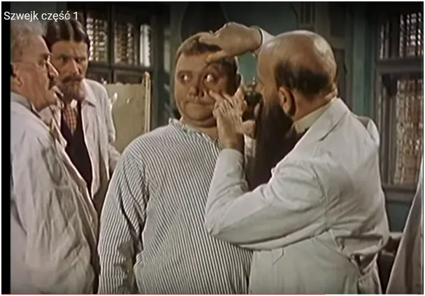
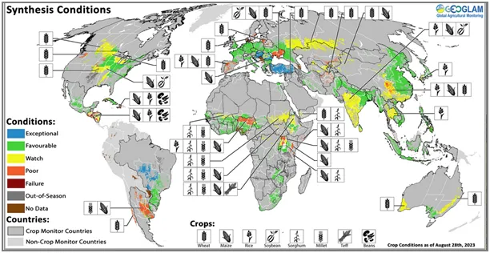
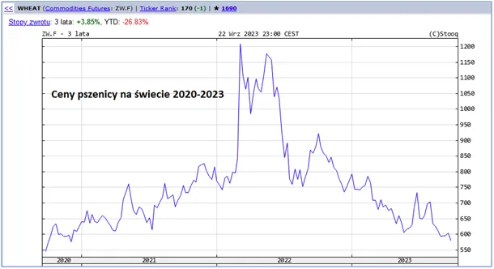

Bójcie się i o nic nie pytajcie!
Taktyka masowego zastraszania od 3 lat przybiera na sile. Celem jej jest odwrócenie uwagi od prawdziwych przyczyn kryzysów, tj.: nadmiernego dodruku pustego pieniądza, masowemu rozdawnictwu socjalu w celach przekupienia elektoratów oraz masowych migracji w celu pozyskania taniej siły roboczej w coraz mniej konkurencyjnych gospodarkach zachodu.
Migracje mają też swój cel kulturowy, niszczą dotychczasowe relacje społeczne, rozbijają więzi czyniąc z ludzi mniej niezależnymi od państwa oraz wzbudzają agresję przeciw imigrantom odwracając uwagę od winnego, czyli od rządu.
W naszym rejonie dodatkowo dochodzi do tego zagrożenie przed wojną, paradoksalnie generowane przez naszych sojuszników, co daje rządowi wspaniałą okazję do zwiększania podatków w celu "obrony narodu", naród paradoksalnie "łyka ten kit" i uważa rząd za swego obrońcę.

Zboża są ostatnio tematem, który ma odwracać uwagę ludzi. Ci w miastach są straszeni klęską głodu, bo zła Rosja nie daje wywieźć pszenicy z Ukrainy. Ludzie na wsi są w potrzasku, bo nie mają pieniędzy na nawozy, gdy ceny spadają z powodu nadmiernego importu z Ukrainy.

Cena pszenicy na świecie leci na łeb, na szyję z powodu spowolnienia gospodarczego i urodzaju. Wiele ludnych państw w ostatnich latach rozwija swoje rolnictwo i uniezależnia się od "światowych rynków", czyli od kapitału spekulacyjnego, który "kręcił lody" przez ostatnie 60 lat, ale obecnie jest wypychany przez Chiny i inne kraje południa.
Sierpniowa mapka urodzaju na świecie pokazuje na skali od niebieskiego (wyjątkowo dobry) przez zielony (korzystny), żółty (jeszcze monitorowany) do nielicznych brązów (zły urodzaj). Ceny pszenicy już znacznie poniżej linii 600 USD, czyli odejmując inflację to jest poziom 500 USD sprzed 3 lat. Tanio jak za barszcz! Śmiech na sali, a może poranny obchód w naszym wariatkowie pt. "zachód" ?
Paweł Klimczewski